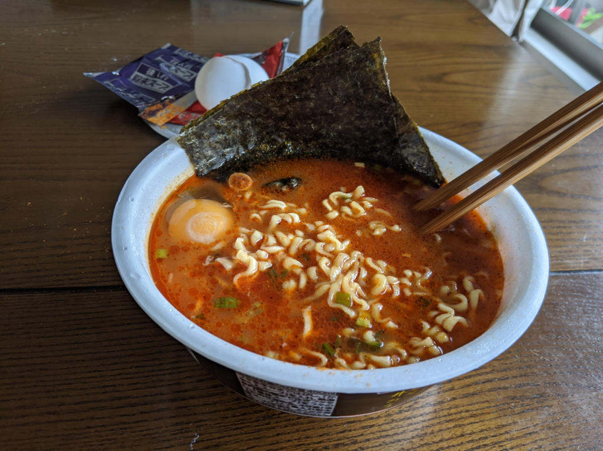

2020年版辛辛魚らーめんを食べた。
公開日：
今年も「辛辛魚」がワンケース届いたので、早速食べてみました。
なお、この記事は id:shibayan の提供でお送りします。旧住所に送られたせいで、転送やら何やらで1週間ぐらいかかったみたい。
豚骨×魚介×激辛！！濃さと辛さの追求
東京石神井の人気店『麺処井の庄』監修の「辛辛魚らーめん」。毎年大変ご好評をいただいている、発売12年目の激辛ラーメンです。
今年は「本物感」をテーマに、よりお店の味に近づけるよう、辛さと豚骨・魚介のバランス、スープの濃厚感を追求いたしました。
「濃厚」かつ「ワイルド」、「激辛」をお楽しみいただける一杯です。※大変辛いラーメンです。辛い物が苦手な方はご注意ください。
辛辛魚はいわゆる「激辛ラーメン」にカテゴライズされるラーメンですが、個人的にはインスタントのわりに麺がおいしい点と、辛いだけでなく、豚骨・魚介のスープのうま味が感じられる点がお気に入りです。2020年は「本物感」がテーマだといいますが……自分は本物を食べたことがないのでわからない！ 自分のカネでは食いたくないので、今度 id:shibayan におごってもらおうと思います。
内容物はかやく、液体スープ、後入れ粉末スープの3点。お湯入れから4分かかるのは、フツーのインスタントラーメンよりちょっと長めですね。かやくの袋の封を切り、容器にぶちまけるだけで軽く「目が辛い」気がする。「あぁ、俺は辛辛魚に帰ってきたんだ」と実感できる瞬間です。
今回は冷蔵庫の中身が貧しかった素の味を楽しみたかったので、トッピングは最小限です。ちょっと色の変わりかけた有明さんの手巻き海苔を1/4カットしたものと、生卵。ネギがあればよかったのだけど、あいにく切らしていて、買いに行くのも面倒だった。

後入れの粉末はすべて投入。部屋にヤバいにおいが充満する。

さっそく食べてみましたが――例年と違いは判らぬ。でも、ちょっとうま味が強く感じられる気がするかも。逆に辛さは少し後退気味に思われたけれど、それはまったくの油断で、スープを飲むとやっぱりからかったです。お腹がグルグルして、お尻の穴が嫌な予感にもにょもにょする。明日絶対、ケツが痛くなるパターンや。
それでもちゃんとスープは完飲。さいごの一口は、残しておいた卵の黄身と一緒にいただきました。あぁ、黄身がめっちゃ甘えぇ……。よい子のみんなは、残り数口を残した状態で捨てるとよいと思います。あまり体によくなさそうな味がする。
まだまだカップはいっぱい残っていますが、賞味期限は夏ぐらいまでなので、週に1個ペースを目標に消化しようと思います。そのうち、胃腸が死ぬかも。

寿がきや 麺処井の庄監修 辛辛魚らーめん 136g ×12箱
- 発売日: 2020/02/03
- メディア: 食品&飲料
追記
うぐぅ、辛辛魚で腹いてえ
— ガイウス・だるやなぎウス・あぶれオス🍊 (@daruyanagi) 2020年2月12日
辛辛魚で腹痛くて眠れぬ
— ガイウス・だるやなぎウス・あぶれオス🍊 (@daruyanagi) 2020年2月12日